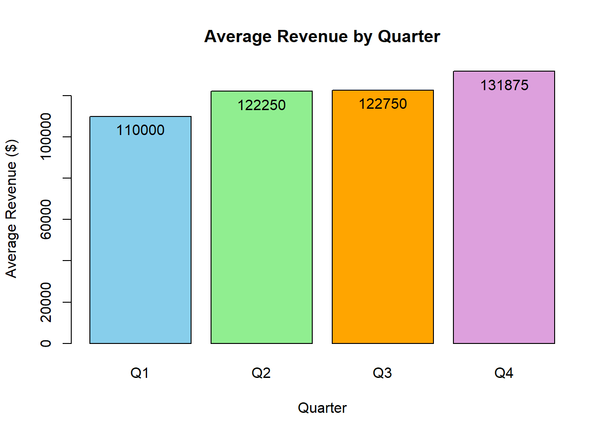

regional_sales <- data.frame(
region = c("North", "South", "East", "West", "North", "South", "East", "West",
"North", "South", "East", "West", "North", "South", "East",
"North", "South","North"),
quarter = c(rep(c("Q1", "Q2", "Q3", "Q4"), each = 4), "Q4", "Q4"),
revenue = c(125000, 98000, 115000, 102000,
138000, 105000, 128000, 118000,
142000, 89000, 135000, 125000,
155000, 112000, 148000, 165000,
120000, 91250),
customers = c(450, 380, 420, 395,
485, 415, 465, 445,
520, 350, 485, 470,
575, 425, 545, 590, 435,324)
)## 'data.frame': 18 obs. of 4 variables:
## $ region : chr "North" "South" "East" "West" ...
## $ quarter : chr "Q1" "Q1" "Q1" "Q1" ...
## $ revenue : num 125000 98000 115000 102000 138000 105000 128000 118000 142000 89000 ...
## $ customers: num 450 380 420 395 485 415 465 445 520 350 ...There are 18 observations of 4 variables. The data types of the variables are:
For 4 quarters of data between 4 regions, we would expect only 16 data points. Further investigation may be needed to find out if these were partial data entries that need to be combined with similar data, or erroneously completed entries that should be removed from the dataset.
## region quarter revenue customers
## 1 North Q1 125000 450
## 2 South Q1 98000 380
## 3 East Q1 115000 420
## 4 West Q1 102000 395
## 5 North Q2 138000 485
## 6 South Q2 105000 415The first value shown in the table is for the North Region.
## region quarter revenue customers
## Length:18 Length:18 Min. : 89000 Min. :324.0
## Class :character Class :character 1st Qu.:106750 1st Qu.:416.2
## Mode :character Mode :character Median :122500 Median :447.5
## Mean :122847 Mean :454.1
## 3rd Qu.:137250 3rd Qu.:485.0
## Max. :165000 Max. :590.0The range of revenue values is $89000 to $165000.
## region quarter revenue customers
## 1 North Q1 125000 450
## 2 South Q1 98000 380
## 3 East Q1 115000 420
## 4 West Q1 102000 395
## 5 North Q2 138000 485
## 6 South Q2 105000 415
## 7 East Q2 128000 465
## 8 West Q2 118000 445
## 9 North Q3 142000 520
## 10 South Q3 89000 350
## 11 East Q3 135000 485
## 12 West Q3 125000 470
## 13 North Q4 155000 575
## 14 South Q4 112000 425
## 15 East Q4 148000 545
## 16 North Q4 165000 590
## 17 South Q4 120000 435
## 18 North Q4 91250 324The dataset provides 18 unique combinations of 4 Regions and 4 Quarters, meaning we have extra data within our set.
## [1] 0There are 0 missing values in the dataset. Missing values can skew the results of our data or may be important information that we have to manually find.
##
## Q1 Q2 Q3 Q4
## East 1 1 1 1
## North 1 1 1 3
## South 1 1 1 2
## West 1 1 1 0Records for each combination of Region and Quarter show that there is a missing data entry for Region West in Quarter 4. There are also 2 extra datasets for Region North in Q4, and 1 extra dataset for Region South, in Q4. This suggests there may be a combination of misreported data as well as extra datapoints that should either be combined or scrubbed from the dataset.
high_performance <- regional_sales[regional_sales$revenue > 140000, ]
high_performance[, c("region", "quarter", "revenue", "customers")]## region quarter revenue customers
## 9 North Q3 142000 520
## 13 North Q4 155000 575
## 15 East Q4 148000 545
## 16 North Q4 165000 590## [1] 4The Northern Region showed the majority of the highest revenues, and similarly the data shows Quarter 4 generating the majority of high revenue results. There were 4 high-performance records (revenues > $140000). This data is skewed due to the additional Q4 entries in the dataset.
regional_sales[regional_sales$quarter == "Q4" & regional_sales$revenue > 130000 & regional_sales$customers > 500, ]## region quarter revenue customers
## 13 North Q4 155000 575
## 15 East Q4 148000 545
## 16 North Q4 165000 590Two of the three months that had high revenue and traffic ( traffic > 500 and revenue > $130000) were in the North Region. This data is useful in showing regions with high conversion rates on customers, generating large profits from traffic, but is also skewed by the 2 additional data entries for North Region in Q4.
north_east <- regional_sales[regional_sales$region == "North" | regional_sales$region == "East", ]
north_east[, c("region", "quarter", "revenue", "customers")]## region quarter revenue customers
## 1 North Q1 125000 450
## 3 East Q1 115000 420
## 5 North Q2 138000 485
## 7 East Q2 128000 465
## 9 North Q3 142000 520
## 11 East Q3 135000 485
## 13 North Q4 155000 575
## 15 East Q4 148000 545
## 16 North Q4 165000 590
## 18 North Q4 91250 324## [1] 134225performance_flag <- regional_sales[regional_sales$revenue < 100000 | regional_sales$customers < 400, ]
performance_flag[, c("region", "quarter", "revenue", "customers")]## region quarter revenue customers
## 2 South Q1 98000 380
## 4 West Q1 102000 395
## 10 South Q3 89000 350
## 18 North Q4 91250 324pf_count <- nrow(performance_flag)
rs_count <- nrow(regional_sales)
percentage <- (pf_count / rs_count) * 100
percentage## [1] 22.22222Quarters where revenue > $100000 and customers > 400 accounted for 4 of the 18 records, or 22% of business quarters.
## region revenue
## 1 East 526000
## 2 North 816250
## 3 South 524000
## 4 West 345000The highest revenues were generated by the North Region, valued at $816250.
## quarter customers
## 1 Q1 411.2500
## 2 Q2 452.5000
## 3 Q3 456.2500
## 4 Q4 482.3333Quarter 4 shows the highest average custommer count. This may be explained by seasonal buying habits or a more successful marketing campaign running in Quarter 4, but the most likely answer is the 2 additional datapoints which are skewing the results.
rev_total <- sum(regional_sales$revenue)
rev_q1 <- regional_sales[regional_sales$quarter == "Q1", ]
rev_q2 <- regional_sales[regional_sales$quarter == "Q2", ]
rev_q3 <- regional_sales[regional_sales$quarter == "Q3", ]
rev_q4 <- regional_sales[regional_sales$quarter == "Q4", ]
high_performance <- regional_sales[regional_sales$revenue > 140000, ]
rev_total## [1] 2211250means <- c(
mean(rev_q1$revenue),
mean(rev_q2$revenue),
mean(rev_q3$revenue),
mean(rev_q4$revenue)
)
quarters <- c("Q1", "Q2", "Q3", "Q4")
bars <- barplot(
means,
names.arg = quarters,
main = "Average Revenue by Quarter",
xlab = "Quarter",
ylab = "Average Revenue ($)",
col = c("skyblue", "lightgreen", "orange", "plum")
)
text(bars, means, labels = round(means, 0), pos = 1)
## region quarter revenue customers
## 9 North Q3 142000 520
## 13 North Q4 155000 575
## 15 East Q4 148000 545
## 16 North Q4 165000 590Based off of the sales data provided, we see consistent performances in the North Region. 3 of the top 4 performing quarters were from the North Region, with $462000 total revenue in its top-3 quarters.
Quarterly-based, performance is consistently higher in Q4 than other quarters. Quarter 4 had the highest average revenue at $131875, and also had 3 of the 4 highest revenue quarters overall.